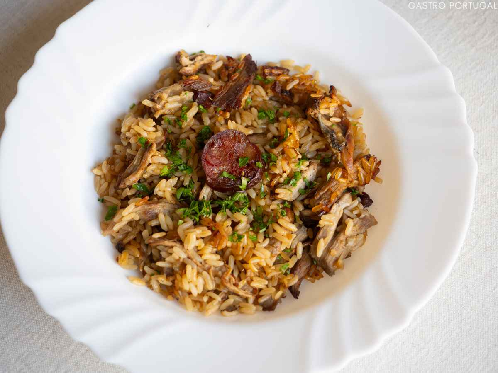

Arroz de Pato

Home
Description
A traditional Portuguese dish combining duck and rice cooked in a rich broth and then baked until crispy.
Ingredients
- 1 whole duck (trimmed of excess fat)
- 1 carrot
- 100g Chourico
- 2 bay leaves
- Long grain rice
- 1 thyme sprig
- 1 garlic clove
- 2 tbsp olive oil
- 1 onion
- small pack coriander
Steps
- Put the duck in your largest pan, cover with water and add the coriander, bay, thyme, star anise, leek top, onion, carrot, orange zest and a grinding of black pepper. Place over a medium heat and bring to the boil, skimming off any scum from the surface. Turn down the heat slightly, cover and simmer for 45 mins, then turn off the heat and let the duck cool in the stock for 15 mins. Drain the stock from the duck, reserving it to cook the rice. Leave the duck to rest until cool enough to handle, then shred the meat away from the bone.
- Heat oven to 180C/160C fan/ gas 4. To make the rice, heat the oil in a large frying pan over a medium-high heat and sauté the leek, onion and garlic for 10-12 mins or until soft and aromatic. Add the rice and fry for 5 mins or until the grains are turning golden and crispy, and sticking to the pan. Add 400ml of the duck stock and cook for 15 mins, covered, without stirring, or until the rice is puffed and dry.
- Stir the duck meat and orange juice through the rice, season, then transfer the mixture to an oiled roasting tin or casserole dish. Top with the chorizo and place on a high shelf in the oven to cook for 20-25 mins or until the rice is crisp and golden. Garnish with coriander or mint leaves, and serve with a salad, if you like.